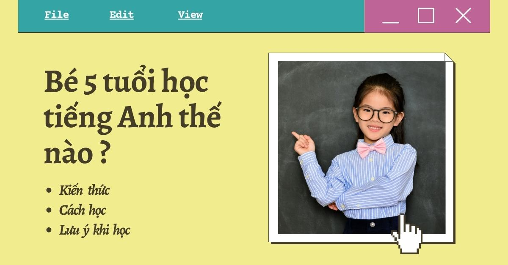
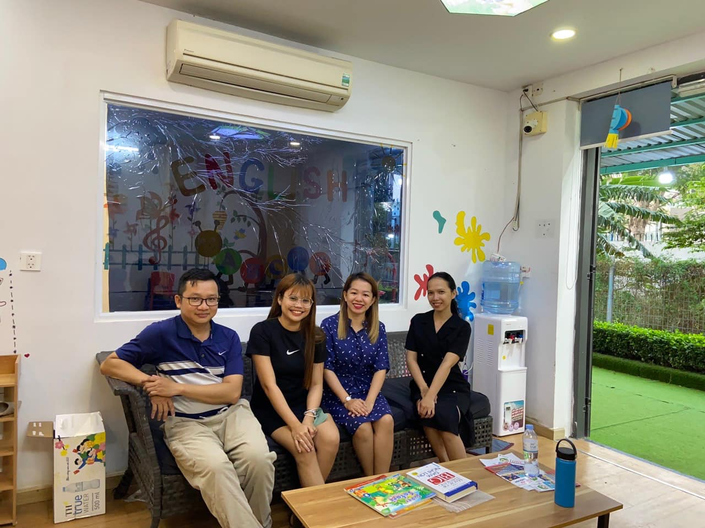
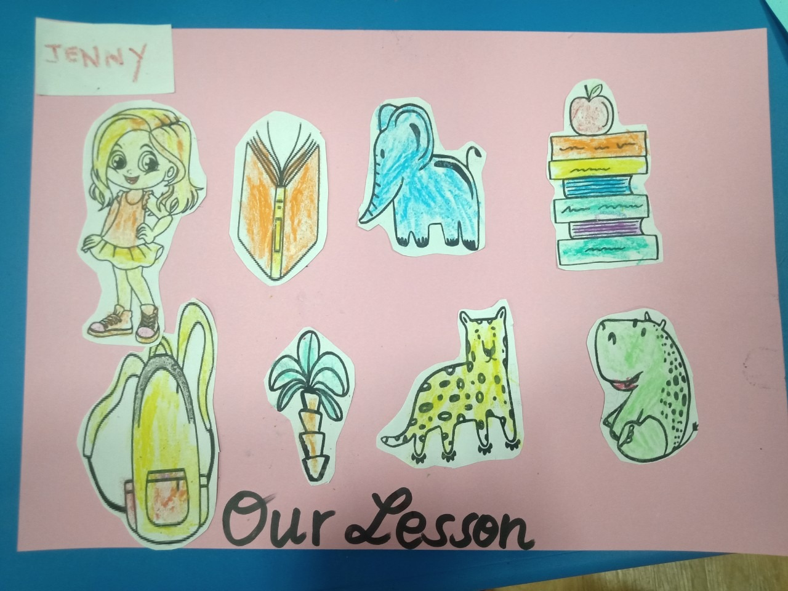

Có nên cho trẻ 5 tuổi học tiếng Anh không?
Từ những tháng cuối thai kỳ, trẻ em đã có thể phân biệt được ngôn ngữ
mẹ đẻ và ngôn ngữ lạ. Tuy nhiên, trẻ cần có một thời gian để có thể
tiếp thu, sắp xếp và hệ thống được ngôn ngữ gốc (ngôn ngữ mẹ đẻ) của
mình. Vậy phụ huynh có nên cho trẻ 5 tuổi học tiếng Anh không?
Độ tuổi từ 4 – 6 được gọi là giai đoạn vàng trong thời kỳ phát triển
ngôn ngữ. Trẻ trong lúc này đã hoàn thiện hệ thống ngôn ngữ mẹ đẻ và
đủ khả năng để tiếp thu ngoại ngữ mà không gặp trở ngại nào.
Vì thế, phụ huynh NÊN đầu tư cho trẻ 5 tuổi học tiếng Anh để giúp bé
tiếp thu bài học một cách tự nhiên nhất.

Bứt phá kỹ năng Anh ngữ khi cho bé học tập trong “độ tuổi vàng”
Nhiều nghiên cứu về trẻ em đã chỉ ra não bộ của trẻ đa ngữ có lượng
chất xám cao hơn và phát triển tư duy tốt hơn so với trẻ đơn ngữ. Khi
được cho học tiếng Anh từ sớm, trẻ phát triển mạnh mẽ về nhiều mặt
Với khả năng Anh ngữ tốt, trẻ dễ dàng nắm bắt các cơ hội học tập tại
môi trường giáo dục chuyên nghiệp hơn và sẵn sàng tham gia các cuộc
thi tiếng Anh quốc tế dành cho trẻ em.
Những cơ hội đầu đời này sẽ là lò xo tạo sức bật cho trẻ chinh phục
những thành tích ấn tượng hơn ở tương lai. Hiểu được những lợi ích
trên sẽ giúp phụ huynh phần nào giải đáp thắc mắc, liệu có nên cho trẻ
5 tuổi học tiếng Anh không.

Phương pháp dạy giúp trẻ 5 tuổi hứng thú học tiếng Anh
Để khiến trẻ 5 tuổi hứng thú với học tập, chủ động tham gia bài giảng
và duy trì động lực lâu dài thì phương pháp dạy học cần phải vui, vì
chỉ có niềm vui mới thu hút được sự chú ý của trẻ nhỏ. Thế nên, các
phương pháp giảng dạy trẻ em khoa học đều đặt trọng tâm vào các hoạt
động vui chơi, khám phá và trải nghiệm.
Song, nhiều phụ huynh vẫn lo ngại không biết có nên cho trẻ 5 tuổi học
tiếng Anh bằng cách vui chơi không. Để giúp phụ huynh có cái nhìn cụ
thể hơn, chúng ta cùng khám phá đặc điểm nổi trội của phương pháp có
tên: Discovery-based Learning – Phương pháp dạy học khơi mở dành trẻ
mẫu giáo.
